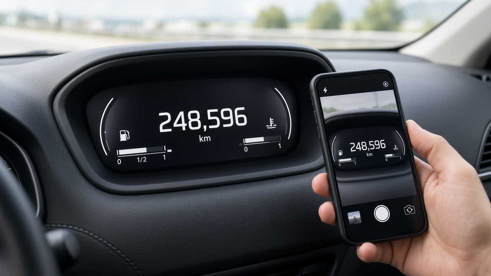

장기렌트 중도해지하면 위약금이 얼마나 나올까, 표준약관 10퍼센트와 실제 계약 20에서 35퍼센트의 차이와 반납 감가 정산까지
장기렌트로 차를 타다가 이사를 가거나 회사 차가 나오거나, 혹은 생각보다 차를 쓸 일이 줄어서 계약을 중간에 끝내고 싶어지는 때가 있죠. 막상 해지를 알아보면 위약금이 몇백만원이라는 말에 깜짝 놀라고, 만기에 반납하는 분들은 반납 평가에서 감가비가 청구된다는 이야기에 걱정이 커져요. 오늘은 공정거래위원회 자동차대여 표준약관과 한국소비자원 안내, 그리고 실제 캐피탈사들이 공개한 상품 조건을 바탕으로 장기렌트를 중간에 끝내거나 반납할 때 돈이 어떻게 계산되는지 정리해 볼게요.
표준약관의 10퍼센트는 장기계약에서는 그대로 적용되지 않을 수 있어요
먼저 많이 알려진 기준부터 볼게요. 자동차대여 표준약관 제8조를 보면 고객 사정으로 대여계약을 해지하면 잔여기간 대여요금의 10퍼센트 상당액을 회사에 내도록 되어 있어요. 소비자분쟁해결기준도 소비자 귀책으로 중도 해지하면 잔여기간 대여요금의 10퍼센트를 공제하고 환급하도록 정하고 있고요.
그런데 같은 조항에 단서가 하나 붙어 있어요. 6개월 이상 장기계약은 회사의 손실을 고려해서 중도해지 수수료를 따로 약정할 수 있다는 내용이에요. 그리고 표준약관 자체가 권고 성격이라 구속력이 없고, 각 회사가 자기 약관을 만들어 쓸 수 있어요. 그래서 12개월에서 60개월짜리 장기렌트는 대부분 회사별 약관에 적힌 별도의 해지 수수료율을 따르게 돼요.
결국 내 위약금을 알려면 표준약관이 아니라 내가 서명한 계약서와 상품설명서의 중도해지 조항을 꺼내 보는 게 첫 번째 순서예요.
실제 계약에서는 잔여 렌트료에 기간별 위약금률을 곱해요
캐피탈사들이 홈페이지에 공개한 장기렌트 조건을 보면 계산식은 대체로 비슷해요. 남은 기간의 렌트료를 먼저 구하고, 거기에 해지 수수료율을 곱하는 방식이에요.
한 캐피탈사 상품 안내에는 차량 인도일로부터 2년 이하에 해지하면 35퍼센트, 3년 이하는 30퍼센트, 4년 이하는 25퍼센트, 4년을 넘기면 20퍼센트를 적용한다고 나와 있어요. 다른 회사는 잔여대여료를 월대여료를 30으로 나눈 값에 남은 날수를 곱해 계산하고, 수수료율은 약관을 참조하라고 안내하고 있어요.
감을 잡기 위해 예를 들어 볼게요. 월 렌트료가 50만원인 48개월 계약을 1년 6개월 차에 해지해서 남은 기간이 30개월이라면, 잔여 렌트료는 1500만원이에요. 여기에 35퍼센트를 곱하면 위약금만 525만원이 나와요. 같은 상황에 표준약관의 10퍼센트를 적용했다면 150만원이었을 테니 차이가 꽤 크죠. 이 숫자는 이해를 돕기 위한 예시이고, 실제 금액은 계약마다 계산 방식이 다르니 회사에 해지 예상 정산서를 요청해서 확인해야 해요.
위약금이 부담스럽다면 계약 승계도 따져 볼 만해요. 남은 계약을 다른 사람이 이어받는 방식인데, 공개된 조건을 보면 승계 수수료를 건당 30만원 정도로 정한 곳들이 있어요. 다만 이어받을 사람이 회사 심사를 통과해야 하니 미리 확인해 두세요.
반납할 때는 감가와 원상복구비가 따로 계산돼요
중도해지든 만기든 차를 돌려주면 회사는 차 상태를 평가해요. 이때 청구될 수 있는 돈은 크게 두 가지예요. 하나는 사고나 교환 이력 때문에 중고차 가치가 떨어진 만큼을 받는 감가금액이고, 다른 하나는 정상적인 마모를 넘어서 훼손된 부분을 고치는 원상복구비예요.
한 캐피탈사가 공개한 수입차 반환 감가 기준을 보면 부위마다 감가율이 정해져 있어요. 앞문은 5퍼센트, 필러는 7퍼센트, 본넷은 8퍼센트, 루프패널은 10퍼센트 같은 식이고, 판넬 하나에 긁힘이나 벗겨짐이 있으면 1퍼센트가 붙어요. 이 감가율은 반환 시점 차량의 중고차 시세에 곱해지고, 수리를 마친 차라도 감가율은 그대로 적용된다고 적혀 있어요.
같은 안내에 나온 예시를 보면 이해가 쉬워요. 중고 시세 1500만원인 차에서 운전석 문을 교체했다면 4퍼센트인 60만원이 감가로 잡히고, 뒷유리 교체비 30만원이 원상복구비로 더해져 모두 90만원이에요. 이때 뒷유리를 고객이 미리 고쳐서 반납하면 수리비 없이 감가 60만원만 적용된다고 해요. 그러니 작은 파손은 반납 전에 직접 수리 견적을 받아 비교해 보는 게 유리할 수 있어요.

반납 날짜와 주행거리도 돈이 되는 항목이에요
반납이 늦어지면 반환 지연금이 붙어요. 공개된 조건들을 보면 하루 렌트료에 늦어진 날수를 곱하고 다시 200퍼센트를 적용하는 곳이 많아요. 하루 이틀 늦는 것도 두 배로 계산되니 반납 일정은 미리 회사와 맞춰 두는 게 좋아요.
약정 주행거리를 넘겨도 비용이 생겨요. 한 회사는 유예 주행거리 1000킬로미터를 빼고 넘은 거리마다 국산차는 킬로미터당 100원, 수입차는 300원을 받는다고 안내하고 있어요. 약정보다 5000킬로미터를 더 탔다면 국산차 기준으로 유예분을 빼고 40만원 정도가 되는 셈이에요.
범칙금과 과태료는 고객이 직접 내는 조건이 일반적이라, 반납 전에 미납된 것이 없는지도 함께 확인해 두세요.
위약금이 지나치다고 느껴질 때 확인할 것
한국소비자원이 렌터카 피해구제 사례를 분석한 자료를 보면, 계약 관련 피해 가운데 중도 반납 시 위약금 과다 청구 같은 해지 정산 분쟁이 가장 많았어요. 사고 뒤에는 수리비, 면책금, 휴차료를 지나치게 청구하는 분쟁이 이어졌고요.
그래서 소비자원은 계약 전에 해지 시 환급 규정과 면책금, 수리비 한도를 꼼꼼히 보고, 차를 받을 때 외관 이상을 계약서에 적어 두고, 사고가 나면 바로 회사에 알린 뒤 수리견적서와 정비명세서를 요구하라고 당부하고 있어요. 반납할 때도 지정된 장소에 돌려주는 게 기본이에요.
법원에서도 약관에 적힌 금액이 무조건 인정되는 건 아니에요. 차를 인도받기 전에 해지한 장기렌트 계약에서 약관상 위약금 1천만원 남짓이 지나치게 많다며 630만원 정도로 줄인 판결이 있었고, 과속 사고 뒤 계약이 해지된 사건에서는 중과실 수리비라는 명목의 청구가 약관법상 무효로 판단된 적도 있어요. 다만 개별 사건의 결과라 내 계약에 똑같이 적용된다고 볼 수는 없어요.
청구 금액이 납득되지 않는다면 먼저 회사에 항목별 산정 근거를 서면으로 요청하고, 그래도 해결이 안 되면 1372 소비자상담센터나 소비자24에서 상담과 피해구제를 신청할 수 있어요. 오늘 정리한 내용은 10월 25일 기준 공개된 약관과 안내를 바탕으로 했고, 실제 정산은 계약서 조항이 우선한다는 점 기억해 주세요.
참고 자료 공정거래위원회 자동차대여 표준약관, 한국소비자원 소비자24 렌터카 소비자피해 주의보, 찾기쉬운 생활법령정보 대여계약의 해지, 캐피탈사 장기렌터카 상품 안내
장기렌트 장기렌트중도해지 장기렌트위약금 렌터카위약금 장기렌트반납 반납감가 원상복구비 렌터카승계 자동차대여표준약관 소비자분쟁해결기준